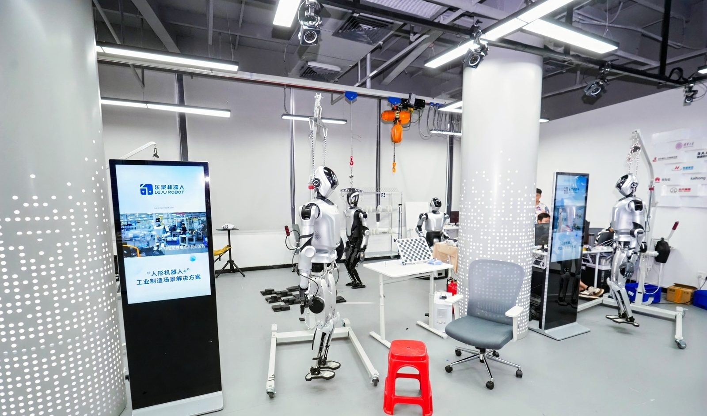
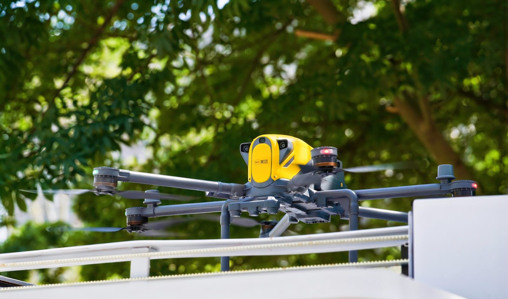
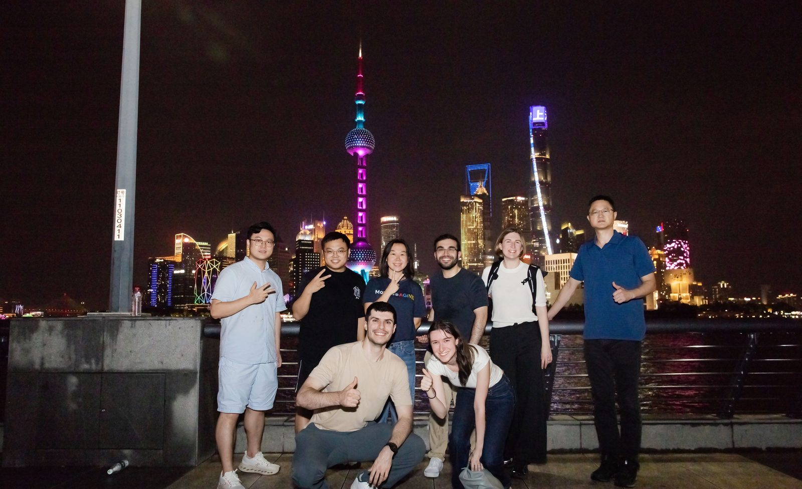
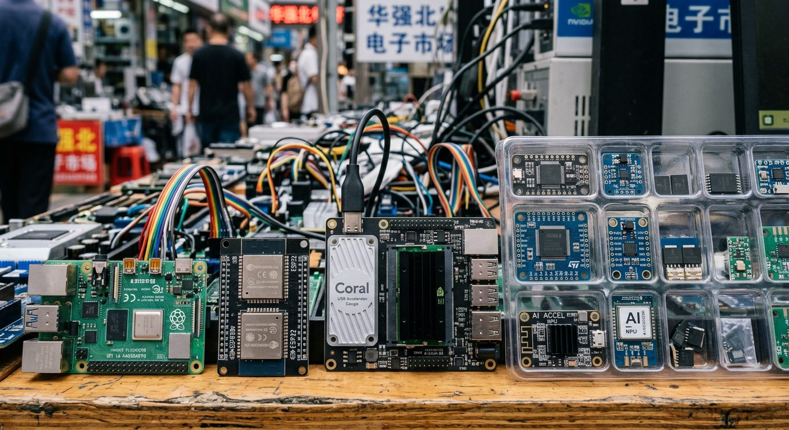

Hardware and robotics
Prototyping, engineering, supply chains and entrepreneurship in one city.
A private introduction to China's AI, robotics and hardware ecosystem. Meet the people building the next generation of technology. AGI Villa curates company visits, founder conversations and cultural time around what you want to learn, explore or build.




Prototyping, engineering, supply chains and entrepreneurship in one city.
Research, talent, startups and the industry that takes technology to customers.
Personally led by Monica Wang, founder of AGI Villa. For investors, founders, executive teams and ecosystem delegations.
AGI Villa is a global community and venture studio connecting China's AI and technology builders with international markets. With 3,000+ founders, operators and innovators in the network, the tour brings global investors and business leaders into relevant conversations across research, products, capital and industry.
Connect technology to the engineering, talent, supply chains and business models behind it. Discuss what is already deployed, what can scale, and what could matter in your own market.
Meet selected founders, operators and ecosystem builders through small meetings, company visits and hosted meals. The mix is shaped around your priorities.
Use firsthand observations to sharpen an investment thesis, explore a partnership, or refine a product and market strategy before you leave.
The institutions, products and everyday services that make Shenzhen a place to understand hardware innovation.
See consumer hardware in person, and how product design, user experience and crowdfunding connect to global customers.
Founded by Professor Li Zexiang, the mentor who helped incubate DJI. Engineering talent, product development, supply chains and manufacturing in one platform.
Components, supplier networks and rapid prototyping. How teams source parts, iterate designs and move from concept to production.
A selected robotics company — embodied intelligence, service robotics or industrial automation — with the use cases, customers and commercialization behind it.
Where booking and coverage allow, experience autonomous logistics or ride as a passenger, then discuss the operating setup and what deployment actually requires.
A hosted dinner with selected AI and robotics founders. Building products, finding customers, and entering international markets.
Universities, incubators and business communities that help ideas become companies — with time to walk the city and think.
Meet teams turning foundation models into products. Applications, enterprise adoption and international expansion. Request the company that matches your brief.
Alma mater of founders behind SenseTime, Yitu and 4Paradigm. Campus time can be paired with separately arranged researcher or laboratory exchanges.
Startup incubation, product validation and local industry links. A founder exchange or showcase can be tailored to your interests.
Applications, agents or embodied intelligence. Exchange market perspectives and identify partners, customers or investment themes.
Shanghai's business waterfront, overlooking Pudong. An evening walk and dinner conversation.
Classical gardens, neighborhood streets, local food and traditional architecture — a feel for everyday Shanghai.
Illustrative company requests may include MiniMax, ByteDance or AgiBot. These are examples, not confirmed hosts. Company, university and laboratory access requires each organization's agreement.
A balanced reference across Shenzhen and Shanghai. Duration, city order, activities and the meeting mix follow your brief and confirmed host availability.
Arrival, an ecosystem orientation and a welcome dinner on the questions guiding your visit.
INNO100 and InnoX Academy. Add drone delivery or a driverless ride where services and timing allow.
Huaqiangbei and a selected robotics company, then dinner with relevant AI or robotics founders.
Shenzhen to Shanghai. Yuyuan and a local dinner as the program moves into its second city.
Shanghai Jiao Tong University, an incubator visit, and a selected startup or founder exchange.
A requested LLM or AI platform visit, tailored partner meetings, and an evening walk on the Bund.
Priority follow-ups, a closing roundtable, and a practical discussion of what to pursue after the journey.
Conferences, GO SUMMIT or other industry events may be added when dates align, with access confirmed separately.
Founder of AGI Villa. Serial entrepreneur and former Xinhua journalist. Two decades across technology, entrepreneurship and international business, with CEO, CMO and Partner roles in AI, education, e-commerce and Web3. Experience in more than 60 countries shapes how she connects China's innovation ecosystem with international markets.
She convenes founders and global partners through AGI Villa and GO SUMMIT, in English and Mandarin. In 2025 she was invited to speak at Harvard on innovation and education in the AI era. She personally curates and leads the China Tech Tour, with local specialists for the agreed program.
An operator's perspective. She connects a technology demonstration with questions about customers, execution and growth.
Context across cultures. Business practice and local context, in English and Mandarin, so both sides can ask clearer questions.
Introductions with a purpose. The founder community is used to find conversations that match your sector, objectives and what you can contribute.
Meeting profiles, technical depth and pace follow your team. A focused one-day immersion, a multi-day city deep dive, or a longer journey. Themes can include industrial automation, health technology, retail or education, subject to relevant hosts.
Founder and operator conversations. Compare approaches to products, customers and international expansion.
Robotics, enterprise AI, or potential suppliers, distributors and technology partners.
Meetings shaped around product development, supply-chain needs and possible local partners.
Campus exchanges, entrepreneur sessions or a focused ecosystem roundtable.
Share objectives, dates, participants and target profiles. We propose a route and confirm the agreed scope.
English-language hosting, local coordination, and time to reflect between conversations.
Where included, priority introductions. Ongoing partnership support can be scoped separately.
Fees are quoted for the agreed scope. A proposal specifies leadership, visits, interpretation, transport, meals, accommodation and intercity travel, as applicable. Meetings and technology experiences depend on host acceptance, access conditions and operating availability.
“The company visits, founder introductions, and overall coordination were thoughtful and highly relevant to what we were looking for as investors.”
Faisal Alnamlah · Saudi Arabia“Not only was she the best host I could have asked for, she reinspired me to double down on my mission: making AI and other technologies a force for good in the world.”
Christian Thierry · Mexico“Thank you for taking the time to introduce us to so many exciting opportunities and for opening doors that made this trip so meaningful and insightful for us.”
Omar Bhamji · United KingdomSector, priorities, preferred dates and group size. Scan to connect on WhatsApp and we will shape the tour around it.
WhatsApp is the direct line for planning a China Tech Tour. The code opens a chat with Monica's team. No form, no switchboard.